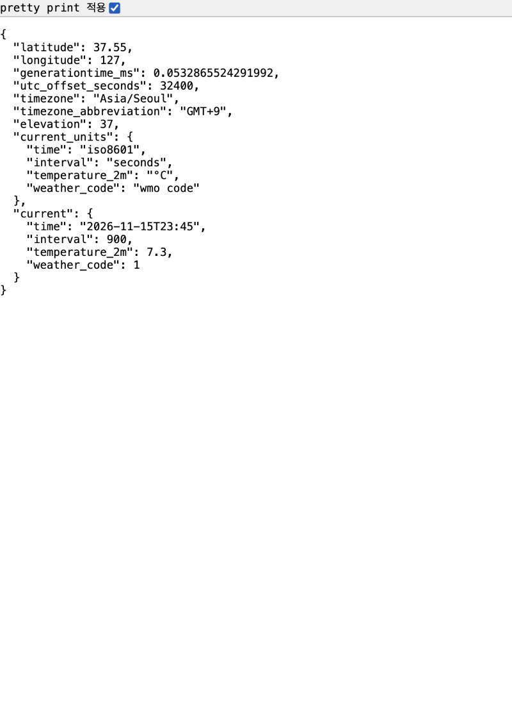
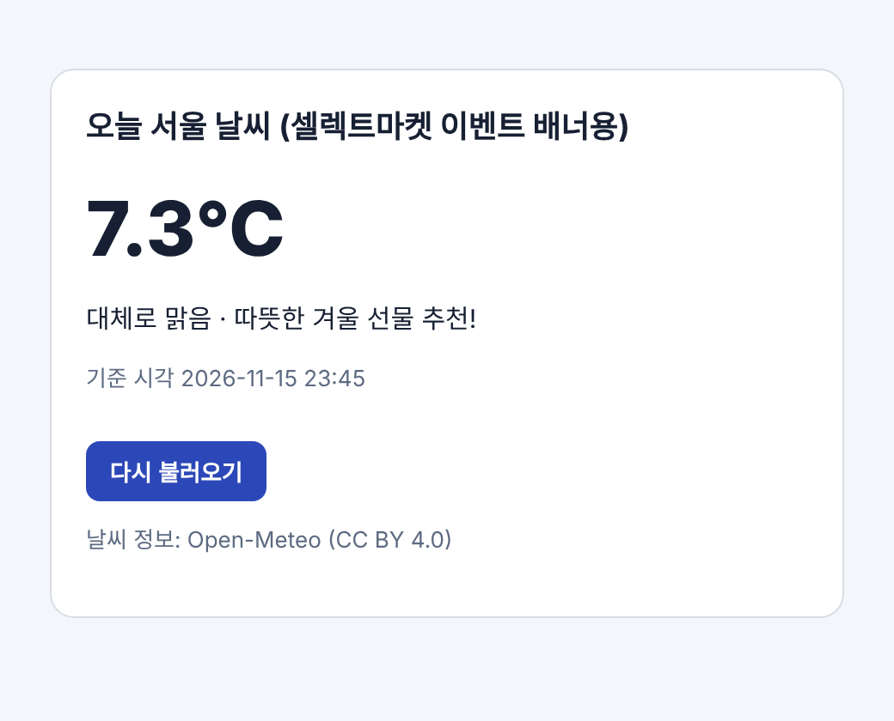
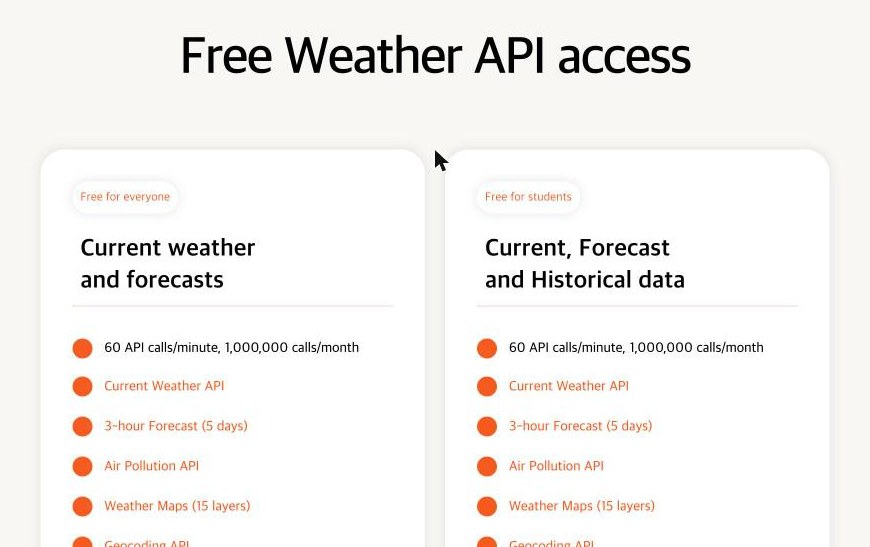
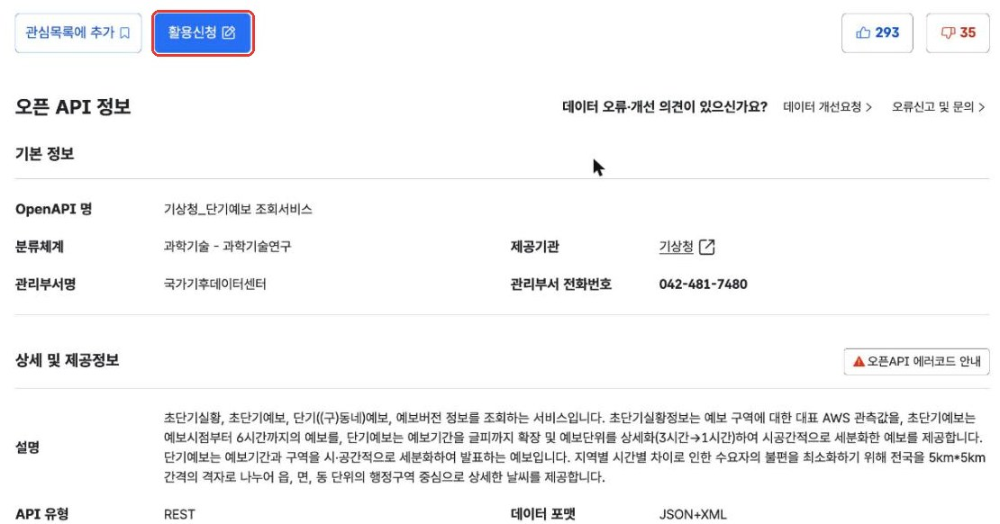

바깥 API를 직접 붙여 보며 요청·응답·키를 익혀요
어제는 클로드에 내장된 AI를 불렀어요. 오늘은 바깥 회사와 기관이 열어 둔 API를 붙여요. 키 없이 바로 되는 날씨 API, 무료 키를 받는 연습용 API, 공공데이터포털 API 순서로 하나씩 어려워져요. 붙여 보면서 API가 무엇인지 몸으로 익혀요.
교육 개요
| 시간 | 09:00–18:00 (점심 12:00–13:00, 수업 8시간) |
|---|---|
| 교과 | [기본] AI 서비스 개발 · 13일차 (총 18일) |
| 교육 목표 | 키가 없는 API, 무료 키 API, 공공데이터포털 API를 차례로 붙여 보고, 요청·응답·주소·키의 뜻과 키를 다루는 규칙을 설명한다. |
| 수업이 끝나면 | ① API를 식당 주문에 빗대어 설명하기 ② 주소창에 API 주소를 넣고 응답(JSON) 읽기 ③ 키 없는 날씨 API를 화면에 붙이기 ④ 무료 키를 받아 붙이고, 키를 코드 밖에 두는 이유 말하기 ⑤ 공공데이터포털에서 API 하나를 신청하고 시험하기 |
수업 전 준비
- 공공데이터포털 회원가입: data.go.kr에 가입하고 로그인해 둬요. 4세션에서 API를 신청해요.
- 이메일: 3세션에서 무료 키를 받을 때 이메일로 가입해요. 개인 메일이면 돼요.
- 어제 만든 채팅: 링크를 열어 둬요. 오늘 만든 날씨를 붙여 볼 수 있어요.
타임테이블
| 시간 | 구분 | 내용 |
|---|---|---|
| 09:00–09:20 | 오늘의 단어 | 오늘의 단어 |
| 09:20–10:30 | SESSION 1 | API란? 요청과 응답 |
| 10:40–12:00 | SESSION 2 | 키 없이 날씨 API 붙이기 |
| 12:00–13:00 | 점심 | |
| 13:00–14:20 | SESSION 3 | 무료 키 받아 붙이기와 키 다루는 법 |
| 14:30–16:40 | SESSION 4 | 공공데이터포털 API 시험하기 |
| 16:50–17:30 | SESSION 5 | API 용어표로 정리하기 |
| 17:30–18:00 | 정리 | 오늘 정리와 과제 |
오늘의 단어
오늘 처음 나오는 말을 먼저 짧게 짚고 시작해요.
| 단어 | 뜻 |
|---|---|
| API | 다른 프로그램에 일을 부탁하는 정해진 창구. 정해진 모양으로 요청하면 정해진 모양으로 답을 줘요. |
| 요청 · 응답 | 내가 보내는 부탁 · 상대가 돌려주는 답 |
| 엔드포인트(주소) | API에 요청을 보내는 주소. 일마다 주소가 달라요. |
| 파라미터 | 요청에 붙이는 조건. 주소 뒤 ? 다음에 이름=값으로 붙여요. |
| JSON | 응답을 담는 글 모양. {"이름": 값} 형태예요. |
| API 키 · 인증키 | 누가 요청했는지 알려 주는 비밀 열쇠. 사용량과 비용이 이 키에 쌓여요. |
| 트래픽(호출 한도) | 하루 또는 1분에 보낼 수 있는 요청 수 |
API란? 요청과 응답
API를 식당 주문에 빗대어 이해하고, 주소창에 API 주소를 직접 넣어 응답을 읽어요.
개념1-1. API는 식당의 주문 창구예요
| 식당에서 | API에서 | 날씨 API 예 |
|---|---|---|
| 주문 창구 | 엔드포인트(주소) | api.open-meteo.com/v1/forecast |
| 메뉴판에 적힌 주문법 | API 문서 | 위도·경도를 넣으라고 적혀 있어요 |
| "김치찌개 1인분, 덜 맵게" | 요청 + 파라미터 | latitude=37.57&longitude=126.98 |
| 나온 음식 | 응답(JSON) | "temperature_2m": 7.3 |
| 회원 카드 | API 키 | Open-Meteo는 비상업용이면 키가 없어요 |
지난주 화요일에 크롤링을 배우면서 "사이트가 공식으로 제공하는 API나 공공데이터포털을 먼저 찾자"고 했던 것 기억하시나요? 오늘이 바로 그 방법이에요. 크롤링은 화면을 긁어 오는 것이고, API는 상대가 쓰라고 열어 둔 창구예요.
실습1-2. 주소창에 API 주소를 넣고 응답 읽기
크롬 새 탭 주소창에 아래 주소를 붙여 넣고 Enter를 눌러요.
https://api.open-meteo.com/v1/forecast?latitude=37.57&longitude=126.98¤t=temperature_2m,weather_code&timezone=Asia/Seoul
글자가 한 줄로 길게 나오면 위쪽 [pretty print 적용]에 체크해요. 줄이 나뉘어 읽기 쉬워져요.
"current" 안의 "temperature_2m"(현재 기온)과 "time"(기준 시각)을 찾아요.

| 찾을 것 | 내가 본 값 |
|---|---|
| 현재 기온(temperature_2m) | |
| 기준 시각(time) | |
| 날씨 코드(weather_code) |
STEP 바꿔 보기
주소의 latitude, longitude 값을 다른 도시로 바꿔 Enter를 눌러요. 예: 부산은 35.18, 129.08. 같은 창구에 조건만 바꿔 요청한 거예요.
출처: Open-Meteo Weather Forecast API 문서("No API key, no sign-up, no credit card. Non-commercial use up to 10,000 daily API calls is free.") (2026-11-15 확인)
결과1-3. 결과
이렇게 보이면 성공주소의 어느 부분이 창구이고 어느 부분이 조건인지 말할 수 있다
키 없이 날씨 API 붙이기
방금 주소창에서 본 응답을 화면에 붙여요. 셀렉트마켓 이벤트 배너에 오늘 날씨와 어울리는 선물 문구를 보여 주는 작은 화면이에요.
기획자2-1. 화면에 보여 줄 것 정하기
| 정할 것 | 예시 | 내 값 |
|---|---|---|
| 어느 지역 | 서울(위도 37.57, 경도 126.98) | |
| 보여 줄 값 | 현재 기온, 날씨(맑음·흐림 등), 기준 시각 | |
| 날씨에 따른 문구 | 10°C 아래면 "따뜻한 겨울 선물 추천!" | |
| 못 불러올 때 | "날씨를 불러오지 못했어요" | |
| 출처 표시 | 날씨 정보: Open-Meteo (CC BY 4.0) |
Open-Meteo는 데이터를 쓸 때 출처를 밝히라고 해요. 기획서에 출처 표시 위치까지 적어 두면 빠뜨리지 않아요.
개발자·구현2-2. 클로드 코드로 날씨 화면 만들기
요청: weather-banner 폴더에 index.html 한 파일로, 오늘 날씨를 보여 주는 이벤트 배너 화면을 만들어 줘. 내용: Open-Meteo API(키 없음)로 [2-1 표]의 값을 불러와 줘. 날씨 코드는 한국어로 바꿔 보여 주고, 못 불러오면 안내 문구를 보여 줘. 화면 아래에 출처를 적어 줘. 외부 라이브러리는 쓰지 마. 형식: index.html 한 파일. 다 만들면 API 주소가 코드의 어디에 있는지 한 줄로 알려 줘.
클로드 코드에게 "이 화면을 내 컴퓨터에서 열어 볼 수 있게 서버를 켜 줘"라고 하거나, 지난주처럼 아티팩트로 게시해 달라고 해요.
화면이 열리면 기온이 1-2에서 주소창으로 본 값과 같은지 견줘요.

막히면
| 이렇게 보이면 | 이렇게 해요 |
|---|---|
| 아티팩트로 열었더니 계속 '불러오지 못했어요'예요 | 클로드 아티팩트는 보안 때문에 바깥 주소로 요청을 보내지 못하게 막혀 있어요. 내 컴퓨터에서 서버를 켜서 열거나, 지난주처럼 깃헙 페이지스로 배포해서 열어요. |
| 파일을 두 번 눌러 열었더니 안 돼요 | 클로드 코드에게 "로컬 서버로 열어 줘"라고 해요. 지난주 목요일에 로컬 서버를 켰던 것과 같아요. |
출처: Claude 아티팩트 페이지 규칙(바깥 호스트로 보내는 fetch 요청 차단) (2026-11-15 확인)
기획자·확인2-3. 개발자 도구로 요청과 응답 보기
날씨 화면에서 F12(맥은 Cmd+Option+I)를 눌러 개발자 도구를 열고 [Network] 탭을 골라요.
[다시 불러오기]를 누르면 목록에 forecast로 시작하는 줄이 생겨요. 눌러서 [Headers]에서 요청 주소를, [Response]에서 응답 JSON을 봐요.
지난주 목요일에 네트워크 탭으로 바깥 연결을 찾았던 것 기억하시나요? 같은 화면이에요.
결과2-4. 결과
이렇게 보이면 성공화면의 기온과 네트워크 탭 응답의 temperature_2m 값이 같다
무료 키 받아 붙이기와 키 다루는 법
이번에는 키가 있어야 쓸 수 있는 API예요. 무료 키를 받아 붙이면서, 키를 어디에 두어야 하는지 배워요.
개념3-1. 키는 비밀번호처럼 다뤄요
| 키를 둔 곳 | 누가 볼 수 있나 | 괜찮은가요? |
|---|---|---|
| 대화창·슬랙·깃헙 이슈에 붙여 넣기 | 기록을 볼 수 있는 모든 사람 | 안 돼요 |
| 공개 웹페이지의 코드(HTML·JS) | 페이지를 여는 누구나(개발자 도구로 보여요) | 안 돼요 |
| 내 컴퓨터의 .env 파일 + .gitignore로 깃헙에서 빼기 | 내 컴퓨터를 쓰는 사람 | 연습할 때 괜찮아요 |
| 서버의 비밀 값 저장소(앱스 스크립트 스크립트 속성, 깃헙 시크릿, 클라우드 시크릿 매니저) | 권한을 받은 사람만 | 실제 서비스에서는 여기에 둬요 |
3주차 월요일에 웹훅 주소를 코드 밖으로 빼던 것, 금요일에 키를 깃헙 시크릿에 넣던 것 기억하시나요? 같은 규칙이에요.
실습3-2. 무료 날씨 키 받아 붙이기
OpenWeather 요금 페이지의 'Free Weather API access'에서 무료 범위를 먼저 확인하고, 이메일로 가입해요. 카드 정보는 넣지 않아요.

내 계정 메뉴의 [My API keys]에서 키를 복사해요. 새 키는 바로 동작하지 않을 수 있어요. 안 되면 잠시 기다렸다가 다시 해요.
키를 대화창에 붙여 넣지 말고, 아래 프롬프트로 클로드 코드에게 키를 넣을 빈 파일을 만들게 해요. 키는 내가 그 파일에 직접 넣어요.
요청: weather-banner에 OpenWeather 현재 날씨를 하나 더 보여 주는 칸을 만들어 줘. 내용: 키는 내가 직접 넣을 거야. .env 파일에 OPENWEATHER_KEY= 한 줄만 비워서 만들고, .gitignore에 .env를 넣어 줘. 키가 화면 코드에 그대로 들어가지 않도록, 내 컴퓨터에서만 도는 작은 서버가 키를 읽어 요청하게 해 줘. 키를 대화창에 붙여 넣으라고 하지 마. 형식: 내가 키를 넣을 파일 이름, 서버 켜는 방법, Open-Meteo 칸과 OpenWeather 칸의 기온이 각각 어디에 보이는지 한 줄씩.
| 견줄 것 | Open-Meteo | OpenWeather |
|---|---|---|
| 키 | 없음 | |
| 가입 | 없음 | |
| 현재 기온 | ||
| 호출 한도 | 비상업용 하루 10,000회 |
두 기온이 조금 다를 수 있어요. 관측 지점과 계산 방법이 서로 달라서예요. 기획서에는 어느 API를 기준으로 할지 적어요.
출처: OpenWeather FAQ("Upon registration on our website using just your email (no banking details required), you will receive an API key that allows for 60 free calls per minute.") (2026-11-15 확인)
결과3-3. 결과
이렇게 보이면 성공키가 .env에만 있고, 깃헙에 올릴 파일 목록에 .env가 없다
공공데이터포털 API 시험하기
공공데이터포털에서 기상청 단기예보 API를 신청하고 시험해요. 신청 → 승인 → 인증키 → 요청 → 응답의 전체 순서를 한 번 겪어요.
실습4-1. 쓸 API 찾고 이용 조건 읽기
공공데이터포털 첫 화면의 '인기 데이터'에서 [오픈 API] 탭을 눌러요. '기상청_단기예보 조회서비스'가 보여요.
눌러서 상세 화면으로 들어가요.
아래로 내려 '이용 조건 및 라이선스 정보'를 읽고 표를 채워요.


| 읽을 곳 | 기상청 단기예보에서 본 값 | 내가 고른 API |
|---|---|---|
| 비용부과유무 | 무료 | |
| 심의유형(승인) | 개발단계: 자동승인 / 운영단계: 자동승인 | |
| 신청 가능 트래픽 | 개발계정: 10,000 | |
| 이용허락범위 | 공공저작물: 출처표시(제1유형) | |
| 위치를 묻는 방법 | 예보지점 X·Y 격자 좌표(nx, ny) |
Open-Meteo는 위도·경도로 물었는데, 기상청 API는 격자 좌표로 물어요. API마다 묻는 방식이 달라서, 문서를 먼저 읽어야 해요.
출처: 공공데이터포털 기상청_단기예보 조회서비스(비용 무료, 자동승인, 개발계정 트래픽 10,000, 요청변수 ServiceKey·base_date·base_time·nx·ny) (2026-11-15 확인)
실습4-2. 활용신청하고 인증키 받기
로그인한 상태로 상세 화면의 [활용신청]을 눌러요. 요약 글 바로 아래에 있어요.

활용 목적에 "수업 실습: 이벤트 배너에 날씨 표시"처럼 짧게 써요.
자동승인 API라서 신청하면 바로 승인돼요. 마이페이지에서 인증키를 확인해요.
인증키는 3세션처럼 .env 파일에 직접 넣어요. 대화창에 붙여 넣지 않아요.
막히면
| 이렇게 보이면 | 이렇게 해요 |
|---|---|
| 인증키가 두 가지로 보여요 | 클로드 코드에게 "공공데이터포털 인증키가 두 가지인데, 이 요청에는 어느 것을 넣어야 해?"라고 물어요. 키 값은 붙여 넣지 말고 질문만 해요. |
| "등록되지 않은 API 인증키입니다"라고 나와요 | 승인 직후에는 키가 바로 동작하지 않을 때가 있어요. 잠시 뒤에 다시 해요. |
개발자·구현4-3. 클로드 코드로 요청 보내 보기
요청: 기상청 단기예보 조회서비스의 초단기실황조회로 서울의 현재 기온을 받아 와 줘. 내용: 인증키는 .env의 DATA_GO_KR_KEY에 내가 넣어 뒀어. 키를 출력하거나 대화에 보여 주지 마. 서울의 nx, ny 값은 활용가이드 문서에서 찾아서 알려 줘. 응답 형식은 JSON으로 받아 줘. 형식: ① 보낸 요청 주소(키 부분은 *** 로 가려서) ② 응답에서 기온(T1H) 값 ③ 결과 코드(resultCode)와 뜻을 한 줄씩.
| 기록 | 내 결과 |
|---|---|
| 요청 주소(키는 가림) | |
| 결과 코드와 뜻 | |
| 받은 기온 | |
| Open-Meteo 기온과 견주면 |
결과4-4. 결과
이렇게 보이면 성공결과 코드가 정상(00)이고, 응답에서 기온 값을 찾았다
API 용어표로 정리하기
오늘 붙인 세 API를 한 표에 놓고 견줘요. 이 표가 기획서의 'API 연동' 칸을 채우는 재료가 돼요.
정리5-1. 세 API 비교표
| 견줄 것 | Open-Meteo | OpenWeather | 기상청 단기예보 |
|---|---|---|---|
| 키 | 없음 | 이메일 가입 후 무료 키 | 포털 활용신청 후 인증키 |
| 비용·한도 | 비상업용 하루 10,000회 무료 | 무료, 개발계정 10,000 | |
| 위치를 묻는 방법 | 위도·경도 | 격자 좌표(nx, ny) | |
| 출처 표시 | CC BY 4.0 | 공공누리 제1유형 | |
| 내 서비스에 쓴다면 |
정리5-2. 웹훅과 API는 무엇이 다른가
| 구분 | API | 웹훅 |
|---|---|---|
| 누가 먼저 연락하나 | 내가 필요할 때 물어봐요 | 일이 생기면 상대가 알려 줘요 |
| 예 | 지금 날씨 알려 줘 | 새 주문이 들어오면 슬랙에 알림 |
| 공통점 | 정해진 주소와 정해진 모양(JSON)으로 주고받고, 주소나 키가 새면 안 돼요 | |
결과5-3. 결과
이렇게 보이면 성공비교표의 '내 서비스에 쓴다면' 칸이 채워져 있다
오늘 정리와 과제
오늘의 규칙
- API를 쓰기 전에 문서에서 키, 비용·한도, 출처 표시, 묻는 방법을 먼저 읽는다
- 응답은 주소창이나 네트워크 탭에서 먼저 보고, 화면 값과 견준다
- 키는 대화창·공개 코드·깃헙에 두지 않고, .env나 서버의 비밀 값 저장소에 둔다
- 같은 정보를 주는 API라도 값이 다를 수 있으니, 기준 API를 기획서에 적는다
날씨를 붙인 이벤트 배너 화면 + 공공데이터 API 테스트 기록 + API 비교표
공공데이터포털에서 내 서비스 아이디어에 쓸 만한 오픈 API 하나를 더 찾아, 5-1 표의 칸(키, 비용·한도, 묻는 방법, 출처 표시)을 채워 와요.
내일은 같은 화면을 다른 개발 도구에서도 열어 보고, 초보자가 쓰기 좋은 라이브러리와 프레임워크를 알아봐요.